Você sabia?
Zoologia
Classificação dos seres vivos conforme a sua alimentação
Alguns seres vivos, ao contrário das plantas que são seres autótrofos (que vem do grego auto, próprio + trofein, alimentar-se) não conseguem produzir seus próprios alimentos.
Estes por sua vez, sobrevivem se alimentando de outros seres vivos. O elefante por exemplo se alimenta das plantas.
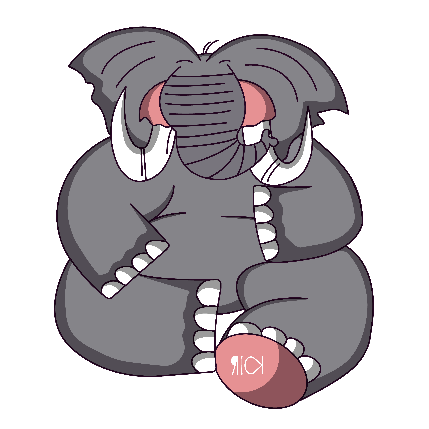O leão se alimenta de outros animais como o elefante. Ainda assim, existem outros animais que podem se alimentar tanto de plantas como animais, como as moscas.
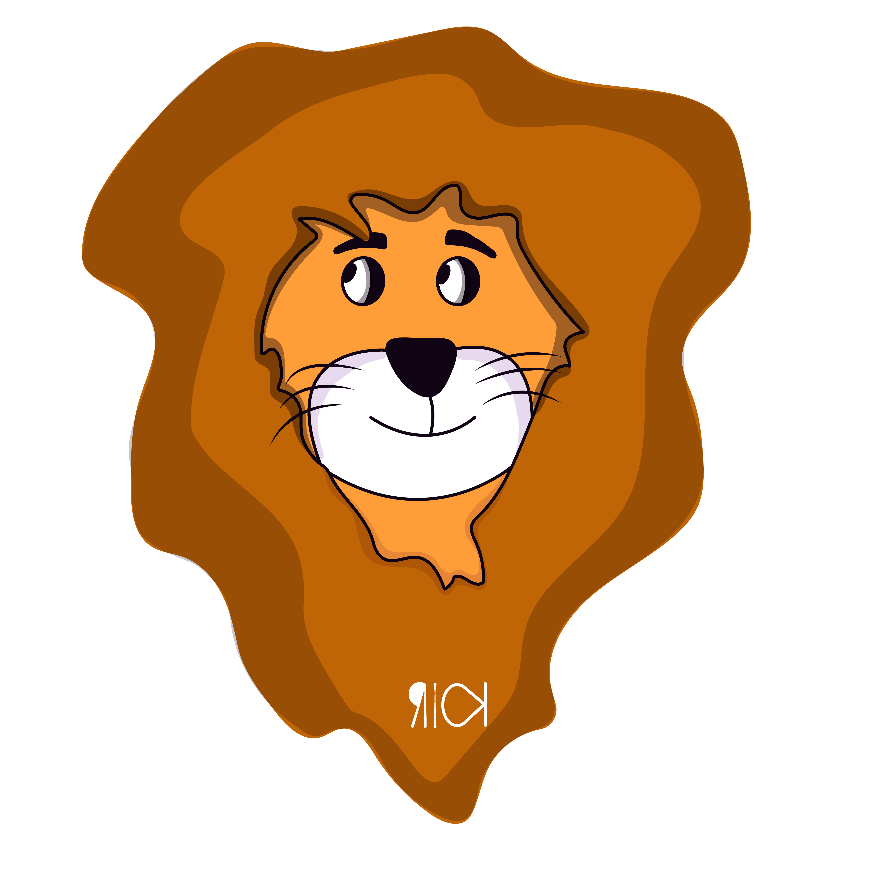Cada um destes animais pode ser classificado pela sua alimentação. As classificações mais conhecidas e discutidas são: herbívoros, carnívoros, detritívoros e onívoros.
Os animais herbívoros alimentam-se apenas de plantas ou algas. Estes possuem uma alimentação que varia de acordo com a espécie. Exemplo: girafa, elefante e hipopótamo.
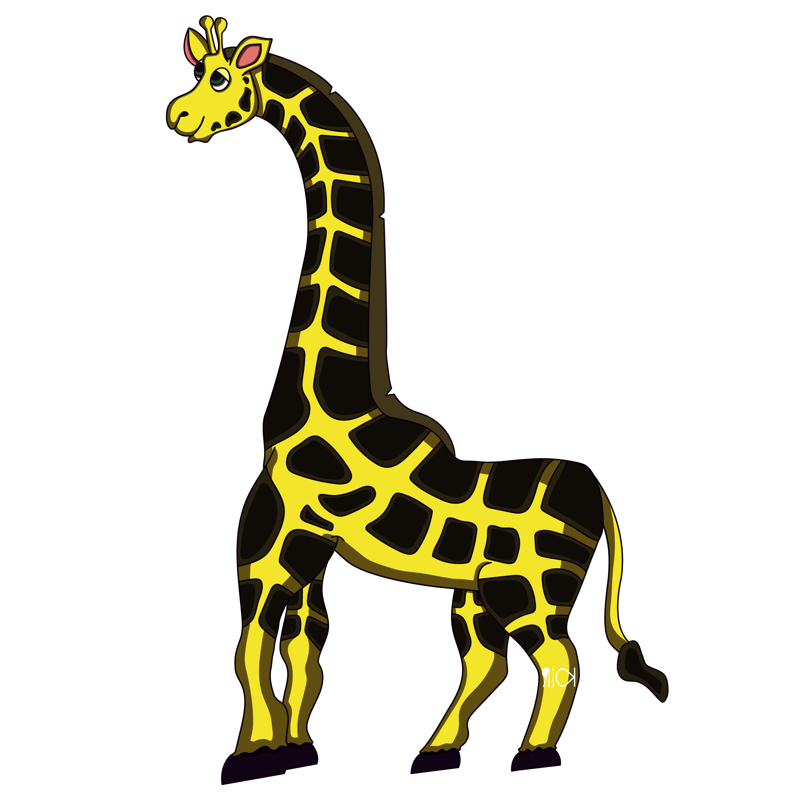Alguns comem muitos tipos de plantas, já outros se alimentam apenas de determinadas espécies, porém existem dois grupos de seres que se alimentam apenas de determinadas partes das plantas como frutos ou sementes, são conhecidos como frugívoros, Exemplo: esquilo e tucano e granívoros, Exemplo: pombos, galinhas e pequenos pássaros.
Os animais carnívoros, são aqueles que se alimentam exclusivamente de outros animais, Exemplo: leão, lobo-guará, cobra e crocodilo.
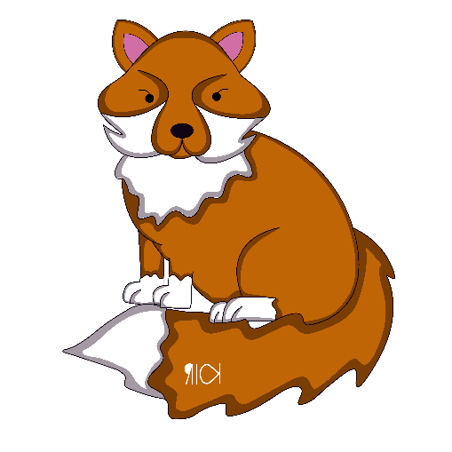Dentro do grupo dos carnívoros, podemos destacar ainda alguns animais que são classificados como piscívoros (alimentam exclusivamente de peixes) Exemplo: pinguins e algumas espécies de baleias.
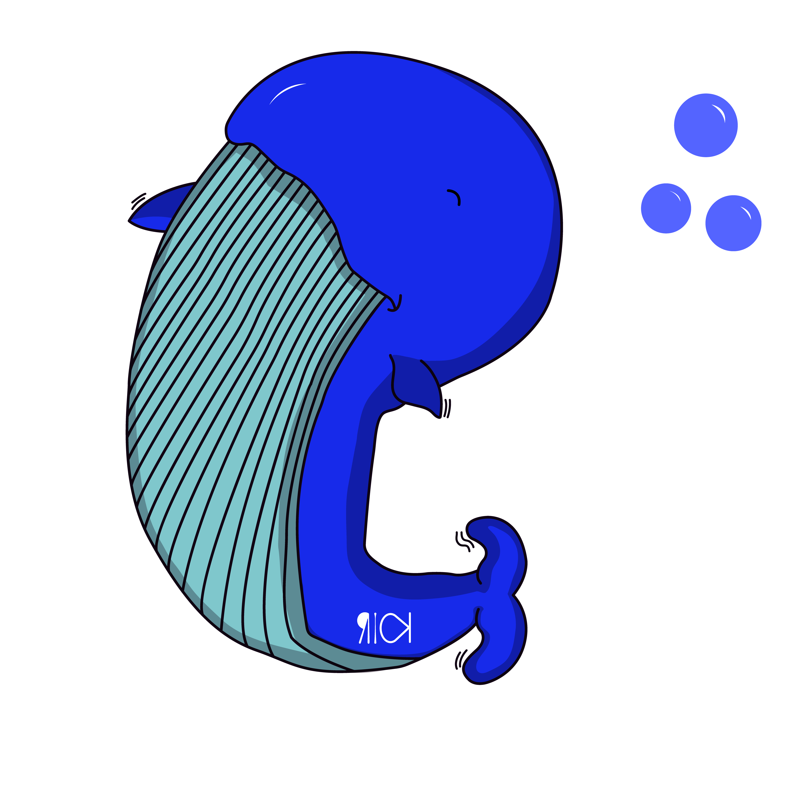Os animais detritívoros, são aqueles que se alimentam de plantas ou animais que estão em estado de decomposição inicial ou avançada. Exemplo: mosca.
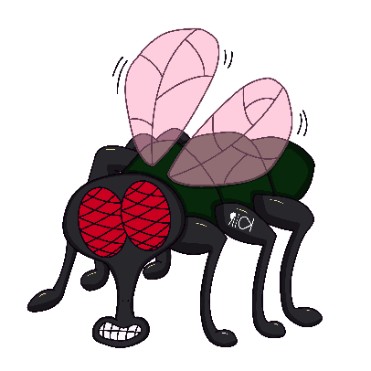Os animais onívoros, são aqueles que se alimentam de plantas e outros seres. Exemplo: seres humanos, urso, porcos e jabuti.
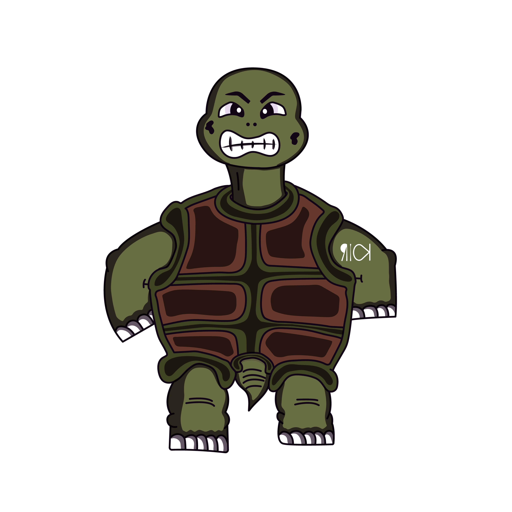Ainda podemos destacar os insetívoros que são aqueles animais que se alimentam de insetos Exemplo: sapo
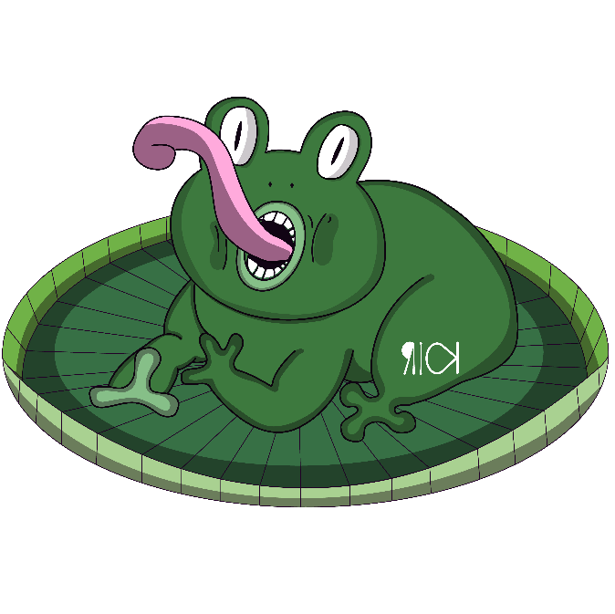CADEIA ALIMENTAR

A cadeia alimentar é uma representação de uma sequencia unilateral onde um ser vivo serve de alimento para um outro, através disso é repassado matéria orgânica e energia para todo o ecossistema, além de manter as relações harmônicas populacionais.
A cadeia alimentar é constituída por diversos organismos, onde cada um possui uma função única e essencial para o bom desenvolvimento do ecossistema. Cada posição aonde estes organismos ocupam são denominadas de níveis tróficos.
O nível trófico é a denominação das posições dos organismos dentro da cadeia alimentar, essa classificação é baseada no hábito de consumo de cada organismo.
Decompositores: são os organismos que decompõem os restos de seres vivos mortos e devolvem os minerais para o solo, atuando como se estivessem reciclando a matéria orgânica. Atuam em todos os níveis tróficos.
Produtor
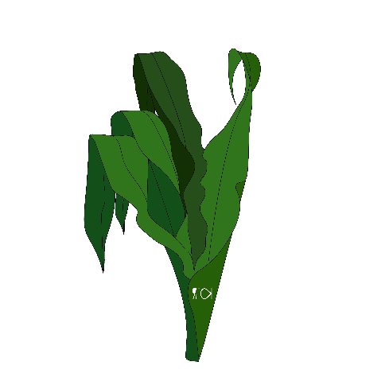Os produtores são os organismos que conseguem produzir seu próprio alimento, ou seja, não dependem de outro ser para se alimentar, ocupando o primeiro nível da cadeira.
Os consumidores são os organismos que obtêm energia alimentando-se de outros organismos.
Consumidor Primário
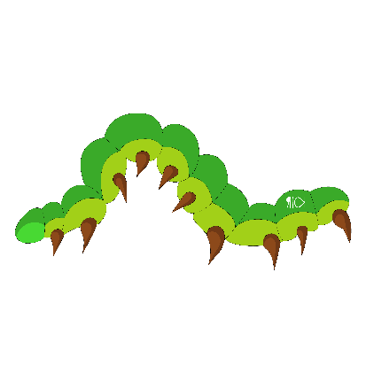Os consumidores primários ocupam a segunda posição na cadeia alimentar, alimentando-se essencialmente dos produtores. Estes animais não conseguem produzir seu próprio alimento.
Consumidor Secundário
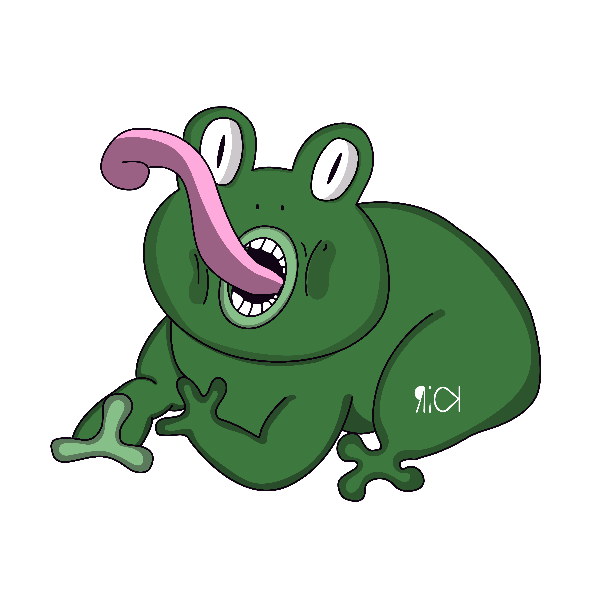Os consumidores secundários ocupam a terceira posição na cadeia alimentar, limentando-se dos consumidores secundários.
Consumidor terciário
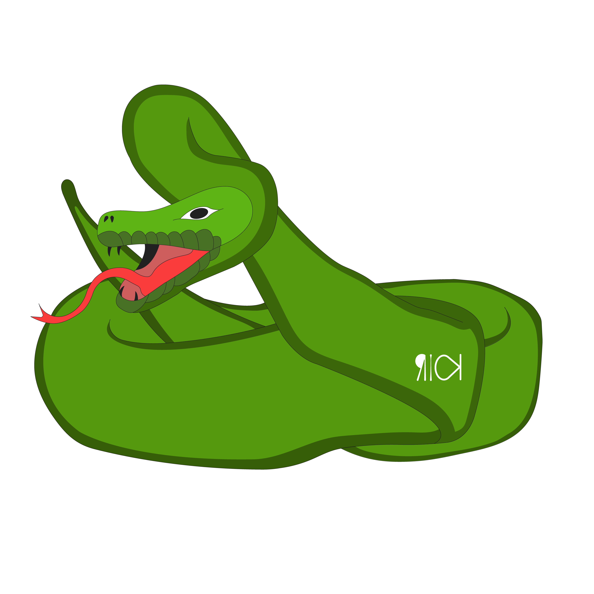Os consumidores terciários ocupam a quarta posição na cadeia alimentar, alimentando-se dos consumidores terciários.
Consumidor quaternário
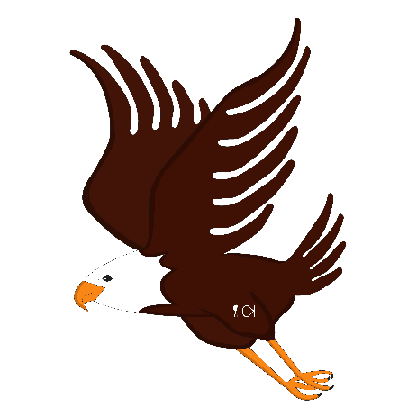Os consumidores quaternários ocupam a quinta posição na cadeia alimentar, alimentando-se dos consumidores terciários. Quanto mais distante dos produtores, mais existe a necessidade da busca por alimento.
Anfíbios
Os anfíbios podem ser encontrados em todos os continentes do mundo, exceto na Antártida, sendo majoritariamente encontrados nas zonas de clima mais quente do planeta. Existe uma imensa diversidade de anfíbios. Exemplo: sapos, salamandras e cobra cega.
O ciclo de vida de muitos anfíbios inclui uma fase larval aquática e sua fase adulta terrestre, ambos ambientes exigem diferentes adaptações, assim estes animais passam por um processo de metamorfose que consiste em mudanças durante seu desenvolvimento, como a perca da calda, nadadeiras e brânquias e adquirem características terrestres como as pernas e pulmões.
Os anfíbios não conseguem produzir calor suficiente para manter uma constância na sua temperatura como os mamíferos, assim são considerados como seres ectodérmicos, assim sendo necessário a liberação de muco através de suas glândulas que garante que a pele fique sempre umedecida.
Quando estes animais estão na sua fase larval podem ser herbívoros ou carnívoros, porém na sua fase adulta sempre são carnívoros, podendo se alimentar de pequenos seres como minhocas, aranhas, moscas e outros pequenos vertebrados.
Os anfíbios possuem uma pele muito fina, assim favorecendo a perca de água do seu corpo ocasionando a desidratação, por conta disso esses animais necessitam manter-se sempre em locais com água abundante, próximo de lagoas, rios e lagos.
Os anfíbios possuem geralmente hábitos noturnos, assim evitando a perca desnecessária de água, tendo em vista que a exposição ao sol favorece o aumento da temperatura e também a desidratação.
A pele dos anfíbios possui duas glândulas de extrema importância para sua vida terrestre, sendo uma delas para a produção de muco protetor que o protege da perca d’água e o mantém sempre úmido. A outra glândula fica estritamente responsável pela produção de veneno, este por sua vez também é disposta em seu corpo.
Os anfíbios são incapazes de lançar ou injetar veneno, este só e liberado quando ocorre pressão em suas glândulas, assim evitando ataques de seus predadores.
A locomoção dos anfíbios se distingue diante da sua metamorfose, no ambiente aquático e na sua fase larval possuem calda e nadadeiras, após o processo de metamorfose, passa a ter pernas bem desenvolvidas, é o caso dos sapos, rãs e pererecas, porém com as salamandras a calada permanece.
A reprodução dos anfíbios é externa, sendo assim são produzidos ovos que são dispersados em locais úmidos, podendo ocorrer também a reprodução interna como nas cecílias que são conhecidas popularmente como cobras cegas.
A respiração dos anfíbios ocorre de duas maneiras, cutânea e pulmonar.
Répteis
Os répteis representam o grupo que possui uma imensa diversidade de animais, assim ocorrendo uma subclassificação dos grupos sendo estes: quelônios, crocodilianos e escamados.
Os quelônios são animais que possuem uma carapaça.
Exemplo: Jabuti, Tartaruga e quelônios.
Os crocodilianos são animais que possuem um focinho alongado, boca repleta de dentes e placas rígidas dispersas por todo o corpo.
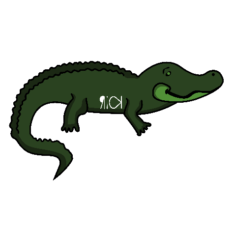Exemplo: Jacarés, crocodilos e gaviais.
Os escamados são animais que possuem escamas em todo seu corpo.
Exemplo: Lagartos e serpentes.
Os répteis não conseguem produzir calor suficiente para manter uma constância na sua temperatura como os mamíferos, assim são considerados como seres ectodérmicos, assim é possível observar diversos animais tomando banho de sol como os jacarés, como também a busca por sombras para que possam regular sua temperatura.
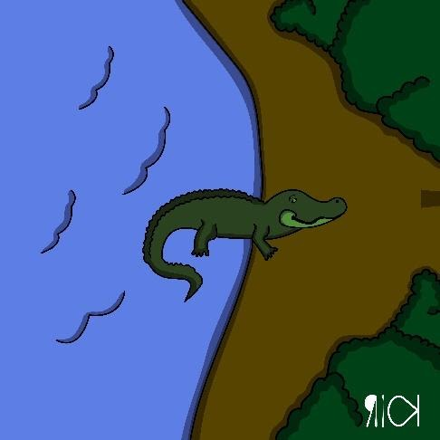Estes animais possuem uma leve vantagem a outros animais endotérmicos como os mamíferos que conseguem regular sua temperatura, pois, seu sistema metabólico necessita de menos energia, assim podendo permanecer por longos períodos sem se alimentar.
A dieta dos répteis pode variar um pouco, sendo em sua maioria animais carnívoros composta principalmente por vertebrados de pequeno e médio porte, assim como pequenos invertebrados.
Os répteis possuem órgãos com sentidos bastante apurados, estes servindo para localizar melhor suas presas e parceiros sexuais. Mesmo eles tendo dentes, estes não possuem diferenças e especificidades entre eles como em outros animais, assim muitas vezes seus alimentos são consumidos inteiros.
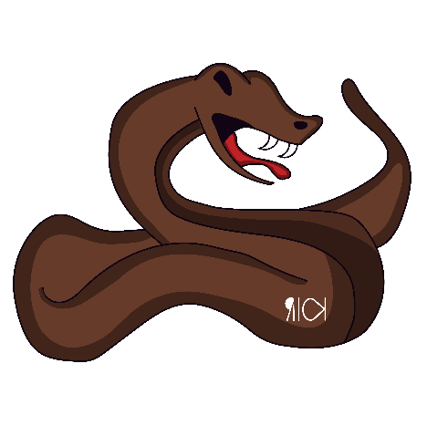Sua pele é bastante grossa e rica em queratina, propriedades que garantem a rigidez necessária. Os répteis que possuem escamas, eles mudam periodicamente, já os jacarés e jabutis possuem placas córneas. Nos quelônios estas placas formam a carapaça que crescem junto com o animal.
Os répteis possuem diferentes formas de locomoção como as pernas que estão presentes nos jacarés e jabutis, a sua ausência também pode ser visualizada nas serpentes e também pernas adaptadas ao ambiente aquático como as tartarugas marinhas.
A fecundação ocorre internamente, sendo sua gestação externa onde o embrião se mantém protegido dentro de um ovo bastante parecido com o das aves, sendo composto por algumas camadas para manter certa rigidez.
Entretanto ocorre em algumas espécies um outro modo reprodutivo a viviparidade que consiste na permanência dos embriões na fêmea até o momento do nascimento.
Aves
As aves assim como os mamíferos são animais endotérmicos, ou seja, conseguem regular a temperatura do seu corpo internamente e a mantêm constante, por conta disso, estes animais mais facilidade em habitar ambientes mais frios, onde os ectodérmicos têm bastante dificuldade.
Entretanto esses animais possuem a desvantagem de ter um metabolismo mais acelerado, assim tendo que manter sua dieta bastante regular, pois não conseguem passar longos períodos sem se alimentar.
As aves possuem diferentes formas de locomoção, como a habilidade de voar, nadar e também caminhar sobre a terra, esta variedade se dá pela adaptação das espécies ao ambiente.
As aves possuem quatro apêndices locomotoras, assim como os anfíbios e repteis, sendo os anteriores modificados que pode corresponder as patas dianteiras ou braços dependendo da espécie, mesmo com a existência das asas, algumas aves não podem voar como os pinguins que são excelentes nadadores.
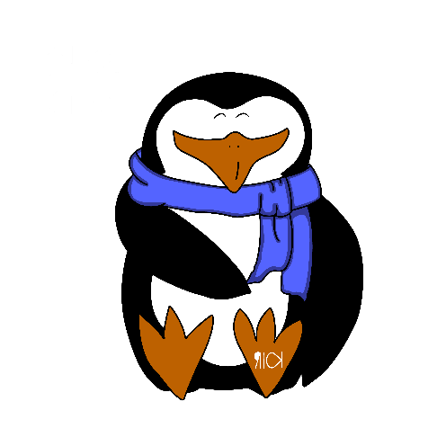Seu corpo é quase inteiramente coberto por penas, que se desenvolvem na pele, estando ligado diretamente ao seu músculo. As aves também possuem escamas, que compõem suas pernas e suas garras. Estas estruturas são recobertas por queratina assim como nos répteis.
Elas possuem diferentes adaptações aos meios onde vivem, assim as aves aquáticas possuem glândulas de secreção de óleo, que com o auxílio do seu bico impermeabiliza suas penas para facilitar a sua flutuação e secagem, auxiliando também na manutenção da temperatura.
A respiração é realizada através dos pulmões, que são ligados a prolongamentos conhecidos como sacos aéreos, onde sua função é a intensificação das trocas gasosas auxiliando diretamente no seu voo.
Elas se reproduzem através da postagem dos ovos, ou seja, são consideradas ovíparos, eles são semelhantes aos dos répteis, possuindo uma casca rígida e contendo todos os nutrientes necessários para seu desenvolvimento inicial.
Nas aves pelo menos um dos pais se responsabiliza pelo cuidado da prole, pois necessariamente eles precisam ser aquecidos protegidos contra os predadores. A alimentação destes filhotes ocorre nos estágios iniciais até que os filhotes consigam sozinhos saírem dos ninhos, geralmente voando.
Seus hábitos alimentares são diversos podendo incluir frutas, sementes, insetos, pequenos vertebrados, crustáceos, peixes, animais mortos, dentre outros.
As espécies possuem diferentes tipos de bicos que as auxiliam em sua alimentação.
Mamíferos
Os mamíferos são animais vertebrados e endotérmicos, ou seja, possuem coluna vertebral e conseguem regular sua temperatura interna. Estes animais podem ser facilmente reconhecidos por causa do seu revestimento corporal que é feito com pelos na maioria das espécies, outra característica é a presença de glândulas mamárias.
As fêmeas, quando estão grávidas, ocorre o aumento das glândulas mamárias e a produção do leite materno responsável pela nutrição e desenvolvimento dos filhotes.
Estre grupo possui grande variedade de espécies com hábitos distintos, estando presentes em todos os continentes.
Nos mamíferos a fecundação é interna, ou seja, todo o processo reprodutivo ocorre por meio da cópula. Na maioria das espécies o desenvolvimento do embrião ocorre internamente, podendo ser também através de ovos como os marsupiais.
Os mamíferos possuem um hábito de cuidado com sua prole, oferecem alimento, proteção e aquecimento nos estágios iniciais do seu desenvolvimento.
Quanto a alimentação, cada espécie possui uma característica diferente de alimentação, que pode variar bastante, podendo ser herbívoros, carnívoros, onívoros e as mais diversas outras definições de alimentação.
A maior parte das espécies mamíferas são compostas por quadrúpedes, entretanto existem outros grupos adaptações, como os saltadores e corredores.
Alguns mamíferos podem ser encontrados nos mais diferentes ambientes como o aquático, nele temos as baleias. também podemos encontra-los no ambiente aéreo como os morcegos.